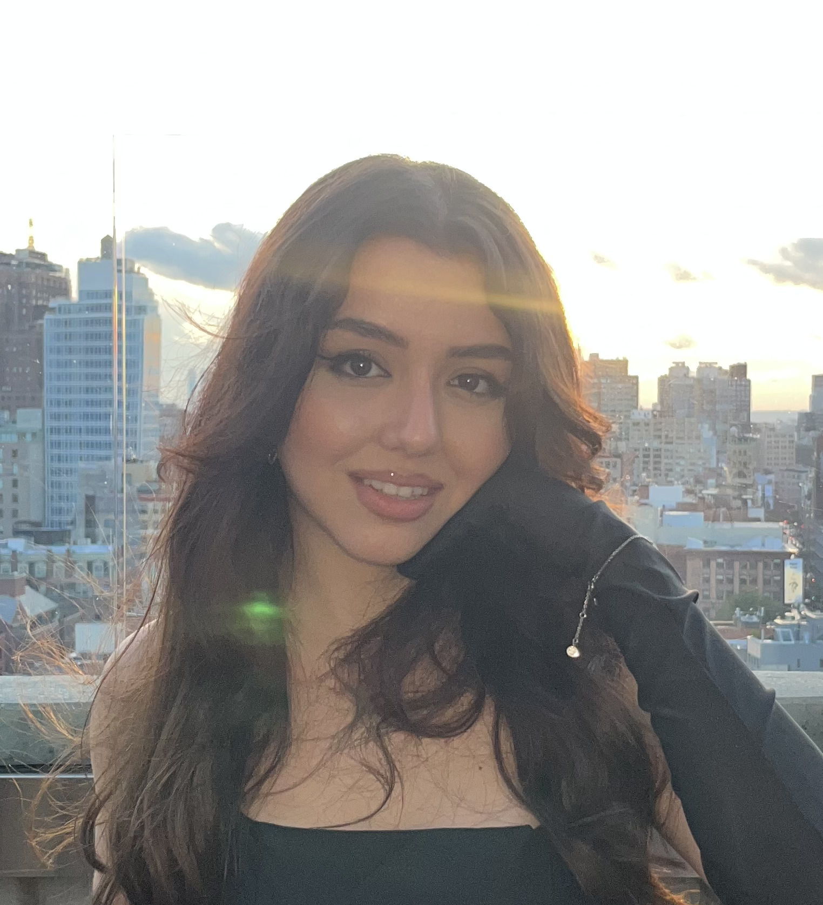

Rayhona
Nasimova
Lead Specialist, Strategic Development Department, AI and R&D Division, IT Park Uzbekistan
M.S. Computer Science (Machine Learning), Georgia Tech
I work on AI strategy and research at IT Park Uzbekistan, drawing on three years of empirical HCI research published at ACM SIGCSE and ITiCSE. My focus is how AI systems can be designed and evaluated with real people in mind.
TASHKENT, UZBEKISTAN

M.S. Computer Science, Georgia Tech
I'm a Lead Specialist at IT Park Uzbekistan, in the AI and R&D Division of the Strategic Development Department, and a Master's student in Computer Science, specializing in Machine Learning, at the Georgia Institute of Technology. My focus is on how AI systems can be designed and evaluated with real people in mind.
Before IT Park, I spent three years as HCI Research Lead at Temple University, studying how large language models can make computing education more personal, accessible, and effective. I'm a Frances Velay Scholar and an EYUF Scholar, recipient of the Uzbek government's flagship scholarship for study abroad.
Where I've Worked
IT Park Uzbekistan
Lead Specialist, Strategic Development Department, AI and R&D Division
- Contribute to national initiatives supporting AI research and development in Uzbekistan
- Work on the design of data infrastructure for the country's AI ecosystem
- Collaborate with international development partners on AI research programs
Temple University, Human-Computer Interaction Lab
HCI Research Lead
- Led studies on how large language models can make computing education more personal and accessible
- Coded and analyzed qualitative data from 350+ study participants
- Co-authored 5 papers at ACM venues; presented in Madrid and the Netherlands
Degrees
Georgia Institute of Technology
M.S. in Computer Science, specializing in Machine Learning.
Temple University
B.S. in Computer & Information Sciences, Honors Program. Russell Conwell Scholar.
Published Work
Exploring the Value of Diverse LLM Explanations in Introductory Programming
Examines whether giving students several varied LLM-generated code explanations, instead of just one, improves comprehension, with direct implications for how AI tutoring tools should scaffold beginner programmers.
Read paper"I can't read your mind": A Study of Neurodivergent Computing Students' Experiences with Collaborative Active Learning
Surveys autistic and ADHD computing students on group-based active learning, surfacing concrete design guidance for building more inclusive classroom and collaboration tools.
Read paperChanging the Optics: Comparing Traditional and Retrieval-Augmented GenAI E-Tutorials in Interdisciplinary Learning
A between-subjects study comparing how learners search for information via traditional tutorials versus a retrieval-augmented GenAI tutorial, offering design guidance for AI-assisted learning products.
Read paperAssessing the Role of Diversity in LLM Explanations for Enhancing Student Understanding
Poster study measuring how varied AI-generated explanation styles affect how well students grasp new programming concepts.
Read paperConference Finalist
Neurodiversity in Computing Education Research: A Systematic Literature Review
Reviewed 1,900+ papers to map the current state of, and gaps in, research on neurodivergent students in computing education; findings shaped curriculum recommendations presented to Temple faculty.
Read paperThings I've Built
VSD Storybook Library: AAC
A Progressive Web App supporting Augmentative and Alternative Communication (AAC) users. I built the full-screen storybook reader, interactive editor, and caretaker upload interface, plus a 6-event user-action logging system mapped directly from the system architecture docs, shipped via feature-branch Git workflow with zero breaking changes.
Adventure Crawler
A roguelike metroidvania built in Godot, blending exploratory platforming with tower-ascension combat and permadeath resource management: one life, no room for waste. I implemented the core UI systems (main menu, settings, audio, and display/input configuration) and designed the scene transitions and state navigation that keep flow consistent between screens, with a focus on usability and layout consistency.